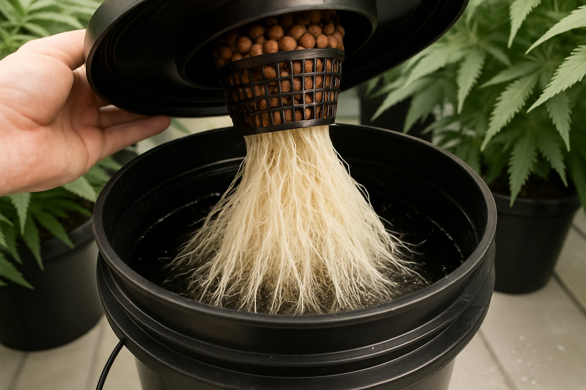
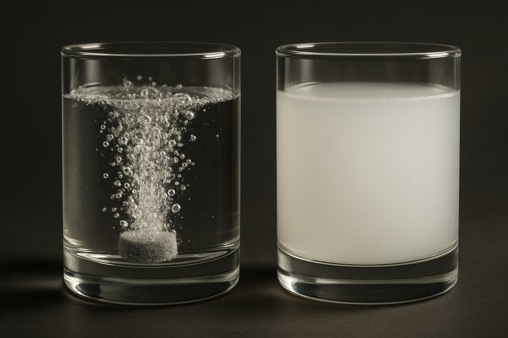
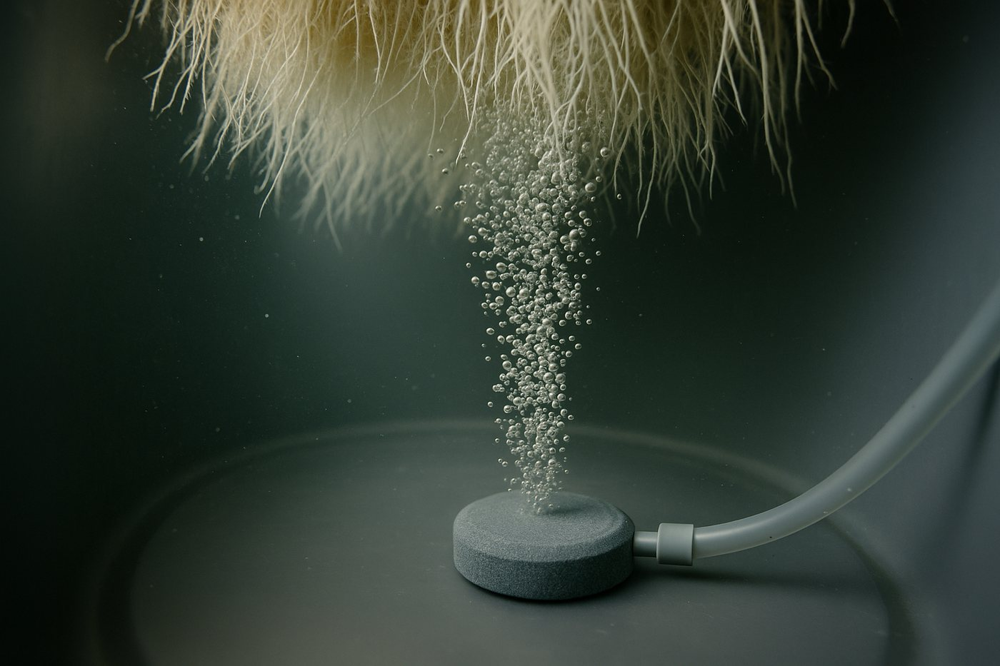
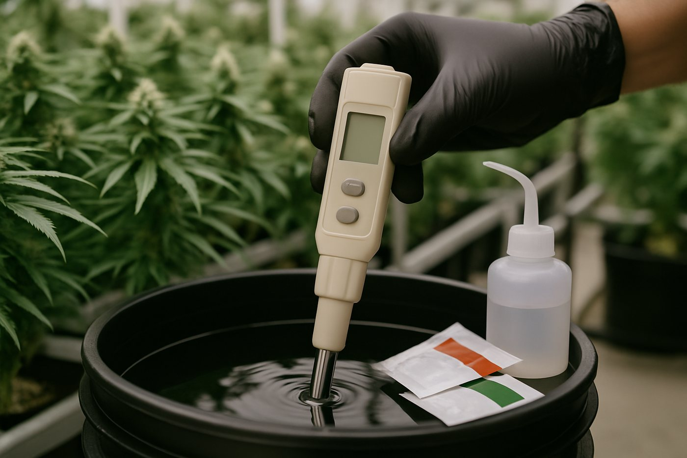
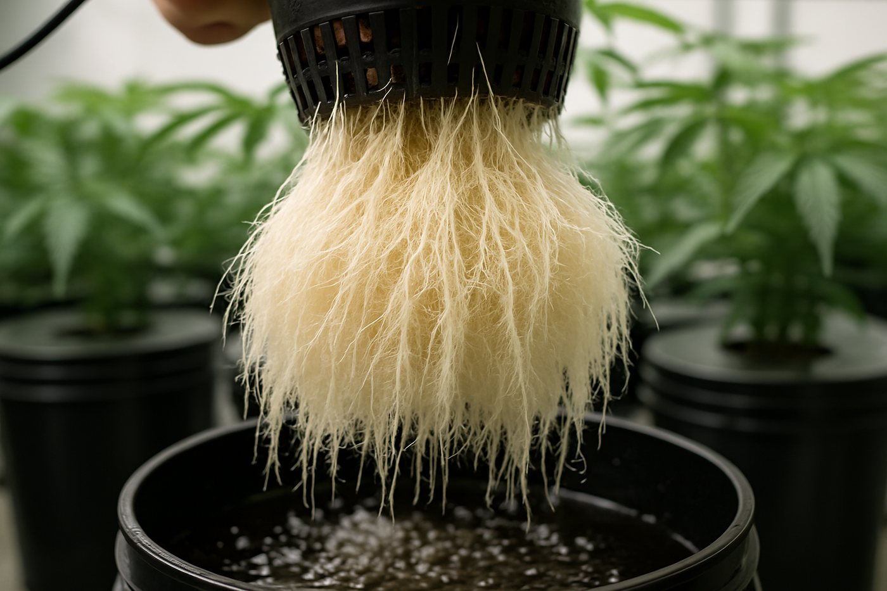
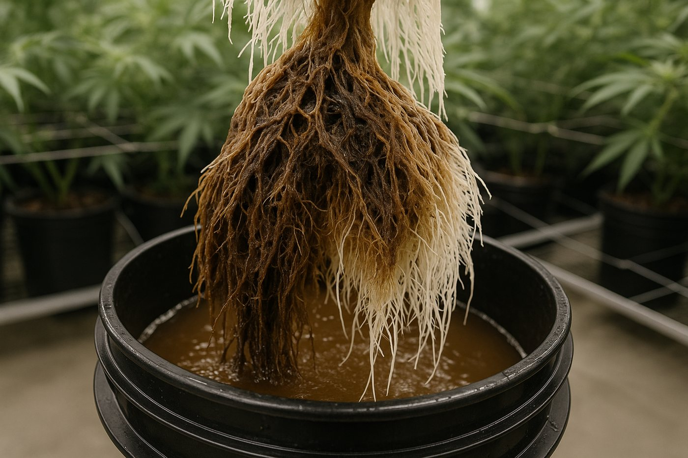
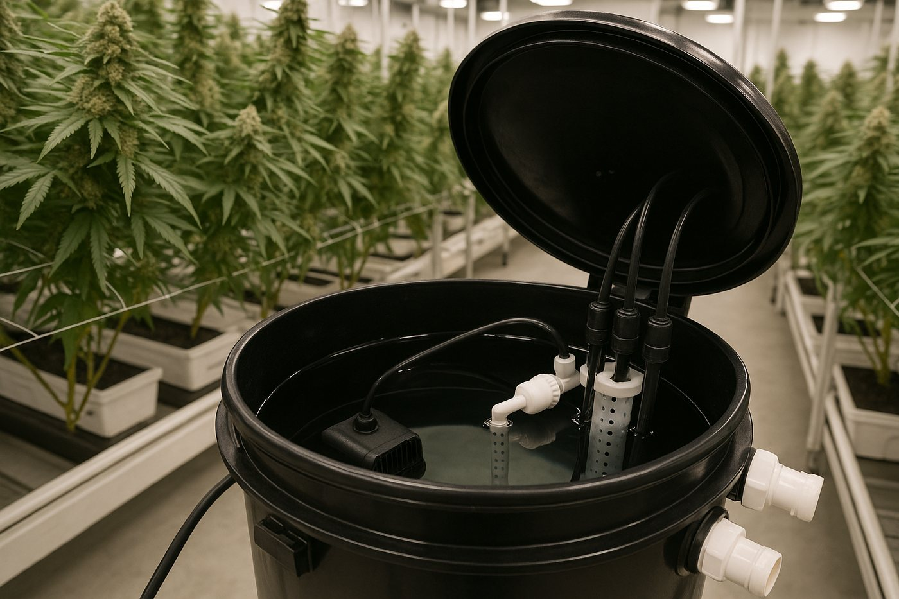
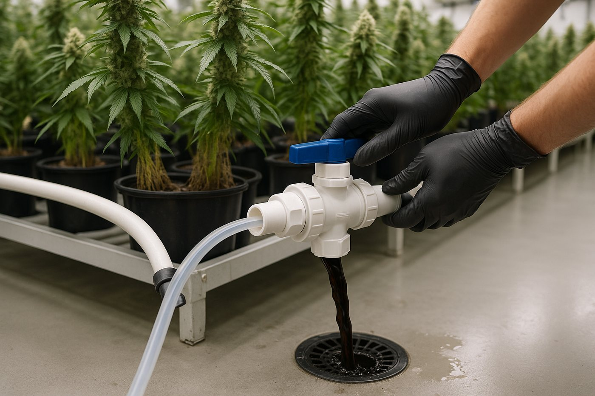

Deep water culture: the basic physics and chemistry
This paper shows that the temperature of the solution is the primary control for all the other conditions in water culture. It shows how to set the aeration rate. The correct rate adds oxygen and does not remove the chemical boundary layer that the roots make. It also shows the quantity that an ORP probe measures and the quantities that it does not measure. The example in this paper is cannabis in a recirculating type of deep water culture (RDWC). The physics of dissolved oxygen and the chemistry of iron apply to all crops.
Purpose and scope
In coco or rockwool, the substrate is a buffer. The substrate holds water, holds air and holds an electrical charge. It also decreases the effect of a small error in the feed. Deep water culture has no buffer. The roots hang in the nutrient solution, and the reservoir must do all the tasks of the substrate at the same time and continuously. The reservoir has no headroom.
All the other sections of this paper are a result of this fact. The highest growth rates in soilless culture and the fastest crop failure come from the same property. There is no buffer between your decision and the root.
If you operate the system correctly, you can get a better result than in other systems. Reviews of deep-water-culture tomato report the same result in many tests. The tomato has more biomass, higher efficiency of photosynthesis, more root growth and higher yield than tomato in soil or in other hydroponic systems. The reviews give the continuous supply of a solution that contains oxygen and has a high nutrient content as the cause.[7]

- Dissolved oxygen (DO) is the quantity of O2 in the water, in mg/L. It is the ceiling for root respiration.
- Solution temperature changes the maximum quantity of oxygen that the water can hold. It also changes the rate at which the roots and microbes use the oxygen. Solution temperature is the primary control.
- ORP is the oxidation-reduction potential, in millivolts. Growers read this number incorrectly more frequently than other numbers in hydroponics. This paper gives more information about ORP than about the other two numbers.
This paper is for a person who operates a water culture system or who thinks about it. It is also for a person who sees an ORP reading and does not know the next step. This paper does not give information about EC and pH. If you do not know EC and pH, read the pH paper and the water-quality paper first. The example is cannabis, but the physics applies to all crops.
Evidence and limitations
We want each paper to be correct. Thus we examine each paper for information that is not solid. This information comes from the view of one grower, from a small number of sources, or from grower methods that have no controlled test. We identify this information, and we do not show it as solid.
Frequently there is no paper for the decision that you must make. Then we use the reports of other growers and the methods that work in the rooms that we know. This information can help you, but it is not the result of a laboratory test. Use the methods that work for your plants, for your room and for your meters. If a table does not agree with your crop, use the data from your crop and record the difference.
- The primary definitions and the units of measurement in the paper
- Safety limits that have a citation to a regulation or a specification
- Target ranges for light, climate and feed in each stage. They are start values that you can change.
- SOPs that work in many rooms, but you must adjust them for your genetics and meters
- A number for yield or potency that you will always get, with no test at many sites
- Controller setpoints from a different facility, with no new calibration
If you find an error, make a report. We will correct it. Make the report on GitHub, with the name of the paper and the information that is incorrect. If you have a source, include it: Make a report of an accuracy problem. The regulations, labels and licenses of your area always override each procedure in these papers. The label weak in a paper shows the points where the risk of an error is highest.
Oxygen solubility in nutrient solution
Start with the limit that you cannot change. Only a small quantity of oxygen dissolves in water. Water holds dissolved oxygen only up to a ceiling. The ceiling changes with the temperature and the pressure. The water releases the oxygen when its temperature increases or when you shake the water. When the temperature is higher, the ceiling is lower.
At 20 °C (68 °F), in equilibrium with usual air at sea level, water holds approximately 9.1 mg/L of dissolved oxygen.[8] Air contains approximately 280 mg/L of oxygen. Water at saturation contains approximately one part in thirty of the oxygen in the same volume of air. A root in the solution has only this quantity of oxygen.
At approximately 20 °C (68 °F), the solubility of oxygen decreases by approximately 1.7% for each °C. Root respiration and the respiration of microbes have a Q10 of approximately 2. Thus, when the temperature increases by 10 °C, the roots and microbes use approximately two times as much oxygen. At the same time, the oxygen that the water holds decreases by approximately one sixth. Thus the ratio of the available oxygen to the oxygen that the roots and microbes use decreases by approximately two and a half times. When a system has a problem, the first check is the temperature of the reservoir and not the aeration equipment.
Many growers read a high DO value incorrectly. Growers who use an oxygen concentrator with a diffuser that makes small bubbles frequently report 15–25 mg/L. Then they think that the water holds a dangerous quantity of oxygen. Two facts are correct at the same time. Use the two facts together to read the value correctly.
At 22 °C (72 °F), water at air saturation holds approximately 8.7 mg/L. A reading of 20 mg/L is approximately 2.3× air saturation. If you stop the gas and let the water stay open to the room air, the water will slowly release oxygen. The value will decrease to 8.7 mg/L.
A pressure-swing concentrator supplies a gas that has approximately 90–95% oxygen. Henry's law shows that the concentration is in proportion to the partial pressure. Thus, at 22 °C (72 °F), this gas can give approximately 38 mg/L in the water at equilibrium. Your 20 mg/L is approximately half of this value. While the gas flows, the oxygen stays in the water.
A solution can hold more oxygen than the saturation value for air and less oxygen than the saturation value for the gas that you inject. This solution is stable while the gas flows. When the gas stops, the oxygen decreases slowly. The solution does not make bubbles on the surfaces of the roots.
The important problem is not gas embolism. The important problem is that the pump stops. After the pump stops, the oxygen decreases to 8.7 mg/L, but the root mass has the size for 20 mg/L.
The size of the bubbles is the other control. A usual air stone makes bubbles that are some millimeters in size. These bubbles move up and break in some seconds.
Nanobubbles are smaller than approximately 200 nm. The surface of a nanobubble has a negative charge. As a result, two bubbles do not become one bubble. The pressure in a nanobubble is high, and thus the gas continues to dissolve.
In the first tests on nanobubbles, a measurement found them in water for approximately 70 days.[13] The nanobubbles supply the gas by a different method. The gas continues to dissolve for a long time after the bubbles that you can see stop.

Plant oxygen demand
The data from tests agree about the bottom of the range, but they do not agree about the top of the range. These two facts are important.
At the bottom of the range, a test used bell pepper in floating culture. With ammonium nutrition, the growth and the photosynthesis decreased when the DO was less than approximately 3.8 mg/L. With nitrate nutrition, they decreased when the DO was less than 5.3 mg/L. The authors recommended these two values as floors. The DO must not be less than these values.[4]
The difference between the two types of nitrogen is important. Nitrate assimilation uses a large quantity of energy. Thus a root with nitrate uses more oxygen than a root with ammonium.
At the top of the range, the effect of more oxygen becomes smaller and then stops. In NFT (nutrient film technique) lettuce, the plants became much larger when the DO increased from approximately 7 mg/L to approximately 8.5–9 mg/L. The wet weight was up to 110% higher in one cultivar, and the root mass was 78% higher.[5]
A test in deep water culture used controlled enrichment at 10, 15 and 20 mg/L. The effect was different for each crop. Arugula became 63–191% larger at more than 15 mg/L, and kale did not become larger at all the DO values. The enrichment caused a 140% higher electricity cost. Only arugula at 20 mg/L gave sufficient value for the cost of the energy.[6]
When the oxygen in the root zone is low, the first effect is not brown roots. The first effect is not sufficient energy. The cortex of the root can continue to get sufficient O2 to absorb nutrients. At the same time, the stele has hypoxia.
The stele is the inner tissue that loads nutrients into the xylem. The xylem moves the nutrients to the shoot. The H+-ATPases in the stele stop.[2]
The plant absorbs ions, but it cannot send them to the shoot. Hypoxia also closes the aquaporins and causes the stomata to close. As a result, the plant moves less water.[3]
The plant shows the symptoms of a nutrient deficiency and a small wilt, but the tank has a correct feed. Subsequently, the roots become brown and lysis occurs.[1]
Examine this condition. The EC and pH are on target, but a deficiency symptom does not change when you correct the feed. In this condition, use the DO meter and the thermometer first. Do this before you apply other nutrients.
Aeration limits and dissolved oxygen
This section can change how you operate your system more than the other sections can. Aeration supplies oxygen, which is good. Aeration also supplies movement of the water, which is not good. At rates that are more than moderate, the bad effect of the movement is larger than the good effect of the oxygen.
A test shows this clearly. The test used deep-flow hydroponics at aeration rates of 0 to 2 L/min. Weak movement of the solution (not strong movement) made the iron uptake much less, and it caused chlorosis in sunflower and corn. The same nutrient solution at the same pH, in a medium of peat, gave the plants sufficient iron and chlorophyll. In tomato, the effect was small. The species are different.[11]
A root does not only absorb the material that is in the bulk solution. The root makes a thin boundary layer around the root, and the solution in this layer does not move. The root changes the chemistry of this layer. The root releases protons to decrease the pH in the layer. It also releases reductants and chelators to make iron available.
This layer is the nutrient uptake system of the plant. The bubbles mix the layer into the bulk solution. When you increase the aeration, you add oxygen and you also remove the boundary layer that the root made to absorb nutrients.[11]
There is a second mechanism. Strong aeration removes dissolved CO2 from the solution. Carbonic acid has an effect on the pH of the solution. When the aeration removes the CO2, the pH increases.
In a deep-water-culture aquaponics test, the plants with strong aeration gave 29% less yield at harvest than the control plants with no aeration. In all the treatments, the dissolved oxygen was always 5 mg/L or more. Thus oxygen was not the limiting factor. The authors gave the pH change that came with the aeration as the cause of the smaller yield.[12]
The next task is to find the correct rate. Two sources independently give almost the same number. Thus you can be more sure of this number than of the other numbers in this paper.
A zero-discharge hydroponic system holds the DO near saturation. The aeration is at a low rate of approximately 100 mL·min-1 for each liter of solution. The minimum depth of the solution is 20 cm (8 in). Sufficient depth makes the concentrations stable and decreases the root density. The low rate of aeration makes the concentrations more equal and does not cause damage to the rhizosphere.[10]
A manufacturer's RDWC procedure gives one circular air stone of medium size, 5 × 5 cm (2 × 2 in), for each 30 L (7.9 gal) bucket. The procedure tells you to put the air stone at the bottom, approximately 2.5 cm (1 in) from the wall. The procedure also gives this instruction: do not put the air stone directly below the net pot, because ‘too much turbidity can cause severe damage to new roots’.[39]
For a 30 L (7.9 gal) bucket at 100 mL·min-1·L-1, the necessary air flow is approximately 3 L/min. For the operating volume of approximately 19 L (5.0 gal) and not the size of the bucket, the necessary air flow is approximately 1.9 L/min. One circular air stone of medium size, at a usual manifold pressure, has a flow of 2–4 L/min.
Thus the number from the paper and the specification of the manufacturer give the same equipment. The paper measured iron chlorosis. A grower looked at root damage. The two sources found the same limit from opposite directions.
Put the air stone at the bottom of the bucket and at a distance from the wall. Then the bubbles move up around the root mass and not through it. A stone directly below the net pot causes the part of the plume with the highest shear to move straight through the new root tips. These root tips break easily. The air volume is the same, but the result is very different.[39]

The primary good property of nanobubble equipment, compared with usual air stones, is that it supplies gas without a plume of bubbles. A usual air stone gives you the oxygen supply and the mechanical movement of the water together. Nanobubble equipment does not.
A test compared irrigation at 5 mg/L with irrigation from microbubbles and nanobubbles at 15 and 30 mg/L. The two higher values gave a larger root volume and a higher yield. The rhizosphere also had a higher number of species of bacteria.[14] Reviews in controlled environment agriculture show nanobubbles primarily as a method to keep sufficient oxygen in the root zone for beneficial microbes.[15]
How to read an ORP value
Oxidation-reduction potential (ORP) is the measurement that growers read incorrectly more frequently than the other measurements in water culture. A platinum electrode in the reservoir gives a voltage in millivolts. The voltage is the balance between oxidizers and reductants in the solution. It is important to read ORP correctly, because the correct reading changes the task that you do.
Most growers read ORP incorrectly at this point. When you increase the dissolved oxygen, the ORP always increases, but almost none of the ORP change is the effect of oxygen on the electrode. Each part is important.
Growers who hear ‘ORP is not an oxygen measurement’ then see the ORP increase by 200 mV when they change to an oxygen concentrator. These growers think that the information was incorrect. The information was not incorrect. The change occurs in the water and not at the electrode.
The O2/H2O redox couple has a large standard potential on paper, but it accepts and gives electrons very slowly at a platinum surface. In electrochemistry, the exchange current density of this redox couple is very low. Two results follow.
First, the electrode is not in equilibrium with the oxygen. At pH 5.8, an oxygen electrode in full equilibrium has approximately 690 mV against a silver/silver-chloride reference electrode. Measurements in reservoirs are less than this value by a large number of millivolts.
Second, the direct effect of the oxygen concentration is small, and you can calculate it easily.
The Nernst slope for a redox couple with four electrons is 59.16 ÷ 4 = 14.8 mV for each decade of oxygen partial pressure. A decade is a change of ten times. The change from air (partial pressure of O2 0.21 atm) to a concentrator with approximately 93% O2 is 0.65 of a decade. The maximum direct effect is approximately 10 mV.
If your ORP changes by much more than this maximum, oxygen did not cause the change directly. Something in the water changed. This change in the water is usually the more important fact.
A grower who used nanobubble equipment measured an ORP of 220-260 mV with air only. The system usually gave good results. But new reservoirs with new clones that the grower transplanted had Pythium and cyanobacteria again and again, and the biofilm stayed.
One sign was important: the roots stayed up in the expanded clay and did not go into the water. The grower changed the same system to an oxygen concentrator. Then the ORP stayed at approximately 480 mV, the biofilm almost stopped, and the roots went into the water.
This change is approximately 240 mV. The maximum effect that you calculate above is approximately 10 mV. The other approximately 230 mV is not the effect of oxygen on the electrode. The reservoir changed.
At 220-260 mV, the water had a large load of reduced organic carbon. The microbes in the water had active metabolism with no oxygen or with a low oxygen content. These reductants are fast redox couples with good poise, and they kept the electrode at a low voltage. The large quantity of oxygen caused oxidation of this load. It also made the group of microbes that made the load much smaller. When you remove the reductants, the electrode increases to a much higher mixed potential.
Thus the ORP change is correct and important, and you can do a task because of it. It is not a measurement of oxygen. The ORP value shows how clean the water is. The oxygen made the water more clean, and the ORP value showed this change. To show this type of change is the correct use of ORP.
Tests show that the interfaces of microbubbles and nanobubbles make hydroxyl radicals without a catalyst. The cause is a high concentration of hydroxide and the electric field at the interface.[16] Tests with a spin trap found signs of radicals in water with microbubbles, months after the treatment.[17]
But a careful test found no hydroxyl radical from oxygen nanobubbles in usual conditions. The test also showed that a fluorescent probe, which many tests use, shows a radical when there is no radical. The cause is that the surface of the bubble has a high concentration of protons.[18] Think of a radical effect as a small effect that tests do not show. The mechanism above, with removal of reductants, is a sufficient cause for the results that growers see. It does not use unusual chemistry.
A careful test on waters from the environment calculated the redox potential independently for each of six different redox couples in the same water. The difference between the six values was up to 1200 mV. The authors found that, in dilute solutions with low concentrations of redox-active species, the platinum voltage is a mixed potential. It gives only approximate numbers, and you cannot use it to calculate the speciation.[19] A hydroponic reservoir is this type of solution.
The second important fact is that you cannot use an ORP value without the pH value. Most redox couples in the environment use protons when they accept electrons. The Nernst equation gives the correct result. At 25 °C (77 °F), the voltage changes by approximately 59 mV for each pH unit, and it decreases when the pH increases.
A grower measured a change of the pH from 6.0 to 5.8 in one day. In the same day, the ORP changed from 476 to 482 mV. Calculate the number to find if the chemistry changed. When the pH decreases by 0.2 units, the voltage of a redox couple that uses protons increases by approximately 0.2 × 59 = 12 mV.
The measured change was +6 mV. The sign is the same, and the size is approximately half. The ‘ORP climb’ was mostly the pH change that the ORP showed. The redox chemistry possibly changed by a small value in the down direction. If you record the ORP without the pH, you get this type of incorrect trend.
The third important fact is about a frequent problem. A probe gets a stable value in the reservoir after some hours, but it gets a stable value in a calibration standard after some minutes.
Manufacturers make calibration standards with a high poise. ZoBell's solution and quinhydrone are examples. They contain a fast redox couple at a concentration in the millimolar range. Thus the electrode gets its voltage quickly.
A nutrient solution that is clean, has a high oxygen content and has a low organic content is the opposite. It has almost no redox-active compounds. Thus a probe can get a stable value only after some hours, after you start it again or put it in the solution again. The probe shows the condition of the solution correctly. This condition is good for a mineral hydroponic system.[19]
These facts do not show that ORP is not important. ORP is an indicator of the sanitizer and of how clean the water is. When you use ORP for this task, it is very important. ORP is the usual control value to disinfect with hypochlorous acid in produce handling. In this task, ORP gives the value for the free available chlorine faster than a concentration test does.[20]
A manufacturer's RDWC procedure uses ORP for this task. The procedure gives three zones. For each zone, it gives a smell as a second check:[39]
| Zone | Condition of the water | Smell | Result |
|---|---|---|---|
| Anaerobic | The ORP is low. The reduced organic load and anaerobic metabolism are the primary effect. A report from a grower of an air-stone system with biofilm that stayed gave 220-260 mV for this zone. | The smell of rot | Pathogen growth and root rot. The roots do not go into the water. |
| Safe | The water is clean. An oxidizer is in the water, but its concentration does not increase. | The smell of clean bean sprouts | The roots are white, and the uptake is usual. |
| ORP shock | The dose of the oxidizer is too large, and the environment has very high oxidation. | The smell of chlorine | The roots cannot absorb nutrients correctly. |
If you use too much hypochlorous acid in RDWC, the oxidation is very high, and the nutrient uptake decreases. Hypochlorous acid is safe for plant tissue. The manufacturer writes that the effect ‘appears as a nutrient deficiency, yellowing or dry, crusty foliage’.
The roots touch the solution for a long time, and a large volume of solution touches them.[39] Thus an RDWC system must have a much lower ORP than other methods. Hypoxia and too much oxidation are two different faults in the root zone. The two faults cause yellow leaves. If you select the cause without a check, you can cause a crop failure.
A high and stable ORP usually shows that your solution is clean and has no reduced organic load. No oxidizer is in the solution, thus no ORP shock can occur. A high number does not show a problem, and you can read it as an indicator of hygiene. The low end is the problem. Examine a reading that is low and decreases, with no oxidizer in the system. It shows that the reduced organic load increases and the reservoir becomes anaerobic.
In this condition, the ORP shows the quantity of oxidizer that stays in the solution, and the shock zone of the manufacturer is a risk. The ORP value must have a maximum limit and a recorded pH value with it. If the ORP is too high, decrease the dose of oxidizer. Do not add other products.
A probe in a plume of bubbles measures the bubbles and the water. This effect is the usual cause of a DO reading that changes between 15 and 25 mg/L. Put the probes in a bottle with holes or in a stilling tube. The water in the bottle or tube has low turbulence. Circulation supplies the water, but the bubbles from the air stone do not go into the bottle or tube.
Biofilm on the surface of the electrode changes a platinum reading by a large number of millivolts.[21] Clean the probe regularly. Do not clean it only when you find a problem.

Iron chelates and chlorosis
Iron is the element that causes the most problems in water culture. The plant must have a larger quantity of iron than of the other micronutrients. In water with oxygen, almost no iron dissolves when the pH is higher than mildly acidic. Iron stays available only because we put it in a chelate.
The three chelates that growers use frequently are not interchangeable. They are different in the maximum pH at which they can hold iron. They are also different in how strongly they keep their iron when other metals try to replace it.
| Chelate | Maximum pH for use | Properties | Cost |
|---|---|---|---|
| Fe-EDTA | approximately 6.0–6.5 | The chelate becomes not stable at a pH of more than 6.5. It releases the iron, and the iron becomes FePO4 and Fe(OH)3, which do not dissolve. Copper, zinc and manganese can also replace the iron in the ligand.[22] | Low |
| Fe-DTPA | approximately 7.0–7.5 | The maximum pH is higher than for EDTA by a large difference. The chelate is the usual selection when you cannot keep the pH constant or when the solution has high oxidation. | Middle |
| Fe-EDDHA | approximately 9.0 or more | The chelate holds iron in alkaline conditions. The data show that it is stable at different pH values and for different times.[23] It makes the solution dark red. | High |
One mineral nutrient set that many growers use divides the iron between two products. The primary product supplies the iron as Fe-EDTA, together with calcium nitrate and the micronutrients that have EDTA as the chelate. The bloom product supplies the iron as Fe-DTPA.[40]
Compare this with the pH schedule. The pH starts at approximately 6.2–6.3 and decreases to 5.8 during the flowering stage.[39] This method is good. The EDTA supplies the iron at a low cost in the acid part of the range. The DTPA gives headroom in the first part of the crop, when the pH is higher, and for drift of the pH.
Interveinal chlorosis in new growth shows as yellow tissue between green veins on the new leaves. It is the usual sign of iron deficiency. In water culture, it has a minimum of two causes. The corrections for the causes are opposite:
- Defective chelate. The pH changed to a value higher than the maximum pH of your chelate. Correct the pH, or change to a stronger chelate.
- Rhizosphere removal. The aeration removes the boundary layer that the root uses to get iron.[11] Decrease the aeration.
More iron does not correct the two causes. For the second cause, more iron also makes the incorrect operation of the system harder to see.
Tests on other iron sources continue. A test on corn used Schiff-base complexes of Fe(II). These compounds are stable at alkaline pH. They gave a higher dry weight of roots and shoots than Fe-EDTA and Fe-EDDHA.[24] But they are not available for production at this time. At this time, the controls are pH control and selection of the chelate.
Organic inputs in recirculating reservoirs
Growers have opposite methods. Some add kelp, fulvic acid or inoculants of microbes to DWC, and some do not. Each group is sure that it is correct. The results of each group are correct. The difference is in the limiting factor of the system of each group.
Each gram of reduced organic carbon that you add to a reservoir is feed for heterotrophic bacteria. These bacteria increase in number. Their respiration uses dissolved oxygen. In water treatment, you add biochemical oxygen demand (BOD). Thus you use a part of your aeration for the microbes and not for the roots. The organic load also decreases the ORP when the reduced organic load increases.
The position against organic inputs is this. The mechanism is correct. Because of this mechanism, the usual instruction for mineral hydroponics is to keep the solution clean. A manufacturer's RDWC procedure does more. The schedule adds a product with hypochlorous acid during the crop, and thus the organic load does not increase. The manufacturer also writes that more than one cleaning cycle can be necessary for pipes that had organic inputs before, to remove organic particles.[39]
The other position also has good data. Some growers use a high dissolved oxygen value, for example with nanobubble systems at 15–20 mg/L. These growers have good results with fulvic acid and biological inputs, and they have no root disease. This agrees with the mechanism: BOD is a problem of rate. If your oxygen supply rate is two to three times the rate of a usual air stone, you can have a large organic load. A usual system has hypoxia with this load.
Tests show that humic substances and fulvic acid have biostimulant effects on the growth of lateral roots and on nutrient-use efficiency.[29] Reviews of nanobubble methods with oxygen show that a high DO is the condition that lets beneficial microbes do their tasks in the root zone.[15]
The group of microbes in a recirculating system is not always a risk. A test used deep-water-culture lettuce during five cycles with the same solution. The groups of bacteria changed by a large quantity between cycles. Some groups had a relation to the expression of plant defense genes. The authors think that groups in the solution that activate plant defenses can be a good method to decrease Pythium without chemical products.[27]
The plant has a stronger effect on the group of microbes at its roots than the water in the reservoir has. A test compared sources in hydroponics and aquaponics. The groups of microbes on the roots were almost the same for roots of one plant. They were not the same for roots that had the same upstream product.[28] You have less control of the microbes on the roots than the labels on the products show.
Find the dissolved-oxygen headroom of your system. If your system is near air saturation with air stones, at 8–9 mg/L, you have almost no headroom. Keep the reservoir mineral and clean.
If your system uses an oxygen concentrator or nanobubble equipment at 15–20 mg/L, you have headroom. You can use some of the headroom for biology.
In each condition, measure the DO before and after you add an organic input. If the DO decreases and stays low, the microbes use your headroom.
Do not read the ORP change as information about oxygen. Products with fulvic acid or humic substances frequently contain iron and chelate compounds. Thus the ORP can change when you add them. First, the ORP decreases when the reduced organic carbon goes into the water. Then the ORP changes to a different value that stays, when the iron equilibrium becomes stable again. The cause is a change in the chemistry of a chelate system with more compounds.
If you want to use biology, inoculants for one target have better data than general organic feeds. A test used Bacillus subtilis and Pseudomonas fluorescens together. The two bacteria together decreased Pythium aphanidermatum more than the effect of one of the bacteria plus the effect of the other. They increased the expression of defense genes, and the survival increased to 83%.[30] Biocontrol with Pseudomonas in many crops can give the same result as chemical fungicides. But the results in production are much less sure than the results in the laboratory.[31]
Root rot: oxygen stress and pathogen risk
The data on pathology in water culture give one primary result. Low dissolved oxygen and Pythium root rot are related risks. They are one problem with one pathway: the oxygen condition of the root zone.
A review of hydroponic systems, plant physiology and oomycete pathology shows this directly. As the root mat becomes larger, the passive aeration decreases, and the root zone has hypoxia. Hypoxia damages the root membranes and changes the exudates that the roots release. Pythium zoospores move to the changed exudates and attach to the roots.
The zoospores also use these exudates to change from the biotrophic phase to the necrotrophic phase. In the biotrophic phase, the pathogen is in the plant and does not show. In the necrotrophic phase, the pathogen kills the tissue.[26]


The primary review of Pythium in hydroponic crops gives a result that is different from the method of most systems. Methods that disinfect the nutrient solution in the pipes, away from the crop, frequently have a small effect on epidemics. A treatment that decreases the pathogen in the roots and root zone has an effect.[25] A UV sterilizer on the return line does less than you think, if the root zone is warm and has not sufficient oxygen.
Stress from the environment is the other part. The same review finds that roots with stress get a Pythium infection more easily. The review also shows that an infection makes the growth of leaf area much slower, and the plant gets less carbon. The efficiency of photosynthesis for each unit of leaf area does not decrease by a large quantity.[25] The plant does not show symptoms, but it makes a smaller canopy than a plant without infection. When the plant clearly shows a problem, the plant is behind by some weeks of growth.
In water culture, one sign is more important than a probe. It is the first sign: the roots stay up in the expanded clay and do not go into the solution. If the roots do not go into the water, the water is not good for the roots. The water is too warm, it has not sufficient oxygen, or it has a load of microbes that the roots stay away from. Growers who correct the oxygen supply find that the roots then go into the water. Read this sign as an alarm for the root zone and not as ‘slow establishment’.
Chemical oxidizers have an effect as a treatment, and they also have a bad effect. A test added hydrogen peroxide to hydroponic solution at 0–400 mg/L. The peroxide caused root damage that you can see in each crop in the test. Cucumber was the crop with the most damage. The concentrations that decrease the pathogen were at the threshold for damage or more than the threshold.[32]
In a test with ebb-and-flow irrigation, high peroxide rates made the growth of lettuce smaller, and no rate decreased algae.[33]
Do not add peroxide to the reservoir at the first sign of brown roots. Many growers do this, but it usually causes more problems.
The tissue of the roots is in bad condition, and the peroxide causes more damage to it. The peroxide decreases to zero in some hours, and thus its effect does not stay. The peroxide has an effect only on the symptom. The cause is warm water with not sufficient oxygen, and the peroxide does not change it.
First, do a check of the thermometer and the air manifold. A product with hypochlorous acid at a small continuous dose is a better regular method than peroxide shocks. The manufacturer gives this schedule: a large dose at fill and change-out, then a small continuous dose during the crop.[39]
Solution temperature
If you use only one control from this paper, use this control. The reservoir temperature changes four values at the same time. They are the oxygen supply, the oxygen demand, the growth rate of pathogens and how stable the pH is. No other control that you can adjust changes as many values at the same time.
The data from tests are clear. A test decreased the temperature of a recirculating hydroponic solution at four setpoints, from 33 °C (91 °F) to 22 °C (72 °F). The DO increased in the feed and in the drain. The roots used more oxygen, and the test measured this. Each measurement of growth, yield and quality was better. The test had three seasons of crops in two years.[34]
The second result is important. When the temperature decreased, the respiration of the roots did not decrease. It increased, because oxygen was no longer the limiting factor.
In production, a ramp that decreases is the usual method, and not one setpoint. A procedure of a manufacturer for RDWC decreases the solution temperature in steps during the crop:[39]
| Limit | Value | Cause of the limit |
|---|---|---|
| Do not transplant clones at less than | 18.9 °C (66 °F) | Cold shock for a root system with a very small mass. The pH also changes when the temperature changes. |
| The uptake starts to decrease at less than | 16.7 °C (62 °F) | Roots at a low temperature absorb nutrients more slowly. This temperature is the floor of the good range. |
| Cold finish that you select | 13.9 °C (57 °F) for the last approximately 10 days | You accept less uptake to get more color in the flowers. Do this when the uptake is no longer important. |
| Zone of high pathogen growth | more than approximately 22–24 °C (72–75 °F) | In warm water, the DO is low and the growth of Pythium is fast. |
A room can have a temperature of more than approximately 24 °C (75 °F) with the lights on. In this condition, a reservoir with no insulation will have a temperature that is not good. First, put insulation on the reservoir. It has no cost, and it decreases the changes of temperature between day and night. Then, if you cannot keep the temperature in the range, use a chiller.
Aeration has a relation to temperature. A blower that moves hot room air is also a heater. Thus the air supply must be away from the canopy space. In a flower room with CO2 enrichment, put the air pump out of the room.[39]
Nutrient concentration in deep-water culture
Growers who change from coco to RDWC almost always apply too much feed at first, because the EC numbers look incorrect. The numbers are correct. Water culture uses smaller EC values, and the cause is the structure of the system.
In coco, the roots touch concentrated feed for a short time during a shot. Then the roots are in a substrate, and they use a part of the nutrients in the pore water. In DWC, all the roots touch the full volume of the solution continuously, all day and each day. For the same nutrition, a much smaller concentration is sufficient. The manufacturer writes that the EC for RDWC is less than the EC of usual feed schedules. The cause is that a large volume of solution touches the root system continuously.[39]
A test from a different source agrees strongly with the low-EC feed method. The test used closed-system hydroponics and measured the nutrients in the root zone continuously. When the test applied two times more nutrient, from 2 to 4 mS/cm, the nutrient in the solution increased. But the yield and the quality of the medical cannabis did not increase clearly.
The test also increased the phosphorus from 15 to 90 mg/L. The phosphorus concentration in the flower increased by 70%, but the yield and the quality did not increase. The authors found that cannabis can have high nutrient concentrations without damage. But more phosphorus and more fertilizer do not make the yield or the quality better.[36]
The pH also has a schedule. The pH decreases in steps from approximately 6.2–6.3 at fill to 5.8, and then it stays there during the flowering stage.[39] The instructions of the manufacturer tell you that the pH is the most important value to keep on target. The instructions also tell you that the pH changes quickly after an addback. Let the pH become stable before you correct it. If you correct the pH immediately after a dose, you can add too much buffer.
Roots absorb cations and anions in different quantities. The roots keep the electrical charge balanced when they release H+ or OH-. With only nitrate, the solution pH increased to approximately 8.0. With too much ammonium, the pH decreased to 3.6. A correct mixed ratio kept the pH at approximately 5.8, and it gave the best yield and the best nitrogen-use efficiency.[35]
If the pH increases continuously and you add acid each day, examine the ammonium fraction of your feed. Do this before you get a larger acid pump.
Two more points are important. Potassium silicate is frequently the pH-up agent in these schedules, and it also supplies silicon. Silicon goes into the cell walls, helps the antioxidant systems and increases the tolerance to stress.[38]
In the ‘finish’ phase of water culture, the EC decreases to a value near zero. This phase is very easy, compared with a substrate. Stop the addback, and the plants use the nutrients in the reservoir.
Water culture cannot do controlled drought stress in the last weeks of flower. This stress increases the cannabinoid concentration by a large quantity. It also increases the yield for each unit of area by a large quantity. Tests show this for cannabis in containers.[37]
If your crop steering uses generative dryback, DWC is structurally the incorrect system. DWC is not a worse system. It is a different system.
DWC is good for a continuous growth rate in the vegetative stage. It is not good for steering with water.
DWC system: size and assembly
Most decisions for a water culture system are about headroom, because a system has no headroom unless you make it.
- 1Make the volume largeMore water gives more thermal mass, more chemical buffer and more time to see a problem. Depth is also important independently. A minimum of 20 cm (8 in) of solution makes the concentrations stable and makes them more equal.[10]
- 2Put all the controls in a bucket with no plantPut the probes and the heater or chiller in the control bucket. Put the float valve, the circulation pump and the dose point in the same bucket. Do not use a plant site as a point of measurement. Do not let a concentrated product touch a root.
- 3Set the aeration to the window and not to the maximum
- 4Put the air stones in the correct positionPut each air stone at the bottom of the bucket, approximately 2.5 cm (1 in) from the wall. Do not put an air stone directly below the net pot. At fill, do a check that bubbles come out of each stone at the same rate. A clogged stone causes hypoxia for one plant, and there is no sign.
- 5Keep air pumps and blowers out of the roomThe air pumps and blowers are sources of heat. In a room with CO2 enrichment, put them out of the room.[39]
- 6Connect a continuous supply of RO waterA float valve in the control bucket, with water from an RO manifold, keeps the water level constant automatically. If you add water by hand, the EC and the water level increase and decrease again and again. Each plant shows the effect.
- 7Clean and prepare the media before it touches a plantExpanded clay contains dust and small particles. The procedure of the manufacturer has three steps.[39] Flush the expanded clay with water. Soak it in water with acid and a product with hypochlorous acid. Flush it again with water. Put the net pots in a sanitizer for a short time to remove dust and particles of plastic.
- 8Set the crown above the water levelThe basal stem and the rockwool cube must stay above the solution. If they are in the solution, stem rot occurs. The solution must be at the structural ring below the planting deck. At this level, the roots get the solution easily, and the solution is not above the crown.
At 2 a.m., the power can stop. A large volume of cool water with a high oxygen content keeps the crop in good condition for some hours. A small volume of warm water with not sufficient oxygen has a problem in one hour. For each dollar, a battery for the air pump gives more protection for the crop than a battery for almost all other equipment. The cause is that the oxygen in the water decreases faster than the other quantities in the system.

Operation and troubleshooting
Water culture gives good results when you do a regular procedure. It gives bad results when you do tasks without a procedure. The procedure for each day is short. Do the same tasks each day, at the same time, and write the numbers.
- Make sure that the water level is at the operating volume and that the float valve operates.
- Make sure that the solution temperature is in the range for the stage.
- Make sure that the circulation pump operates and that the drain valve has no blockage.
- Make sure that the air pump operates and that bubbles come out of each stone at the same rate.
- Measure the pH and EC with a calibrated meter.
- Smell the reservoir. The smell must be clean. It must not be the smell of rot or of chlorine.
- Look for leaks
- Calibrate pH and EC probes
- Clean the ORP and DO probes. Biofilm causes an error that you cannot see.[21]
- Compare the pH and EC readings with a second meter.
- Examine a root mass. The roots must be white and hard, and not light brown with slime.
- Do a check of the inline filters.
- Examine the trend and not only the number for this day.
A change-out is the method to start the solution again. The primary task is to know when to do a change-out. A partial change-out replaces 20–50% of the solution to correct a small imbalance. A full change-out drains the system to the bulkhead, and you make the solution again.[39]
| Condition | Task |
|---|---|
| Usual change-out at three weeks of the vegetative stage | Partial change-out |
| The pH changes slowly although you correct it | Partial change-out first. If the problem stays, full change-out. |
| The plants absorb less nutrient, but the values are stable | Partial change-out |
| The pH increases or decreases to a value that is out of the permitted limits | Full change-out |
| To correct the pH, you must add more and more buffer each time | Full change-out |
| The values went out of range because the operator made an error | Full change-out |
| Change to the flowering stage after four or more weeks of the vegetative stage | Full change-out |
| After defoliation, or at approximately days 26–32 | Full change-out |
| 10–14 days before harvest | Full change-out |
Roots in air get stress, and damage occurs fast. Drain the system quickly. Fill it again immediately. Stop the power to the system while you do the change-out. Make the new water and set its temperature before you open the drain. The worst condition is an RO tank that is empty when the drain is in progress.

To find the cause of a fault, use the information from all the sections of this paper. Most water-culture faults show as one of three symptoms. Each symptom has more than one cause, and the corrections can be opposite:
| Symptom | Possible causes | First check | Frequent incorrect step |
|---|---|---|---|
| Interveinal chlorosis, new growth | The chelate does not hold the iron above its maximum pH, or the aeration removes the rhizosphere layer. | The pH record, then the aeration rate | More iron |
| The leaves are yellow, and the edges of the leaves are dry and hard. | ORP shock because the dose of oxidizer is too large | The dose rate of the oxidizer. Smell for chlorine. | You think that it is a feed deficiency, and you add nutrient. |
| The growth is slow, there is a small wilt, and the feed is on target. | Hypoxia: the stele has not sufficient oxygen before you can see root damage. | The solution temperature, then the DO, then each air stone | More EC |
| The roots are brown with slime, and the smell is the smell of rot. | Root rot, downstream of low oxygen | The temperature and the aeration, and not the pathogen | A peroxide shock without a correction of the oxygen |
| The pH increases continuously | Nitrogen with a high fraction of nitrate, or too much aeration that removes CO2 | The ammonium fraction of the feed, then the aeration rate | Acid doses that increase each time |
| The DO value changes by a very large quantity | The probe is in the plume of bubbles | The position of the probe. Read the value in an area with low turbulence. | You think that the number is correct. |
| The roots stay in the expanded clay and do not go into the water | The solution is not good for the roots: it is warm, or the DO is low, or the load of microbes is high | The temperature and the DO, then how clean the reservoir is | You wait, and you think that it is ‘slow establishment’ |
| The ORP increased by approximately 200 mV after a change of equipment | The reservoir became more clean. The cause is not the direct effect of oxygen. | Find if a chemical oxidizer is in the water. Record the pH with the ORP. | You read it as a measurement of dissolved oxygen. |
- Solution temperature. It changes the oxygen supply, the oxygen demand and the pathogen growth rate at the same time. No other control has this effect.
- Sufficient aeration at a low rate. Increase the DO to more than the floor for hypoxia, then stop. The top of the range has a different problem.
- A stable pH. If the pH is too high, your iron chelate does not hold the iron. The pH is the value with a very small buffer.
- A clean reservoir. The organic load is oxygen demand. Use your DO headroom with a decision, and not by accident.
- Recorded numbers. To find the cause of each fault in the table above, examine the trend. One reading gives almost no information. An ORP reading without the pH gives no information.
References
- Drew MC (1997). Oxygen deficiency and root metabolism: injury and acclimation under hypoxia and anoxia. Annual Review of Plant Physiology and Plant Molecular Biology 48:223-250. https://www.annualreviews.org/doi/10.1146/annurev.arplant.48.1.223
- Colmer TD, Greenway H (2011). Ion transport in seminal and adventitious roots of cereals during O2 deficiency. Journal of Experimental Botany 62(1):39-57. (Stelar hypoxia inhibits xylem-parenchyma H+-ATPases, so nutrients are absorbed but not loaded to the shoot.) https://academic.oup.com/jxb/article/62/1/39/562539
- Tan X, Xu H, Khan S, et al. (2018). Plant water transport and aquaporins in oxygen-deprived environments. Journal of Plant Physiology 227:20-30. (Hypoxia closes aquaporins and triggers stomatal closure before any root symptom is visible.) https://consensus.app/papers/details/763e25b0e3225a5e9e7240a6f9b9e2e7/
- Roosta HR, Bikdeloo M, Ghorbanpour M (2024). The responses of pepper plants to nitrogen form and dissolved oxygen concentration of nutrient solution in hydroponics. BMC Plant Biology. (Growth and photosynthesis impaired below 3.8 mg/L with ammonium and 5.3 mg/L with nitrate.) https://consensus.app/papers/details/9d38d6a7abd25e499356415c9299791a/
- Nițu O, et al. (2024). Optimizing lettuce growth in nutrient film technique hydroponics: evaluating the impact of elevated oxygen concentrations in the root zone under LED illumination. Agronomy 14. (8.1-9.0 vs 6.8-7.8 mg/L; fresh mass up to +110%.) https://consensus.app/papers/details/5a91b04f87f4574ea8b41ca74a60fca7/
- Qin K, et al. (2025). Boosting hydroponic production of kale and arugula by managing dissolved oxygen. HortScience. (Deep-water culture at 10/15/20 mg/L DO; arugula +63-191% above 15 mg/L, kale unresponsive, energy cost +140%.) https://consensus.app/papers/details/8061b2ad1e0a5c94bd469cdf12f26c07/
- Nsele SN, et al. (2026). Recent insights into tomato (Solanum lycopersicum L.) cultivations in deep water culture systems. Discover Sustainability. https://consensus.app/papers/details/80def129c06552c6afe262ab87a8582c/
- Benson BB, Krause D (1984). The concentration and isotopic fractionation of oxygen dissolved in freshwater and seawater in equilibrium with the atmosphere. Limnology and Oceanography 29(3):620-632. (The standard air-saturation tables.) https://aslopubs.onlinelibrary.wiley.com/doi/10.4319/lo.1984.29.3.0620
- Bok F, Moog HC, Brendler V (2023). The solubility of oxygen in water and saline solutions. Frontiers in Nuclear Engineering. (Temperature-dependent Henry's law function for O2; salinity salting-out coefficients.) https://consensus.app/papers/details/f3300e3a0ef65adf8897f8dc767a2d66/
- Langenfeld NJ, Bugbee B (2024). Sustainable hydroponics using zero-discharge nutrient management and automated pH control. HortScience. (Gentle aeration at ~100 mL·min-1·L-1 holds DO near saturation; ≥20 cm solution depth stabilises the root zone.) https://consensus.app/papers/details/55797967d9185928bf9582a1148bded7/
- Langenfeld NJ, Bugbee B (2025). Aeration and agitation in hydroponic culture have detrimental effects on iron uptake. Frontiers in Plant Science. (Bubbling-induced agitation reduced iron uptake and caused chlorosis in sunflower and corn; tomato was tolerant.) https://consensus.app/papers/details/6ffb3bfbc8fe5b65a528ecd0e50d5f7c/
- Bodenmiller D (2017). Effects of aeration on lettuce (Lactuca sativa) growth in deep water culture aquaponics. Tampere University of Applied Sciences. (Heavy aeration stripped CO2, raised pH and depressed yield even though DO never fell below 5 mg/L.) (source not from a journal, for example from a manufacturer) https://consensus.app/papers/details/549a8575046a5948a75e0718d3fb7a55/
- Ebina K, Shi K, Hirao M, et al. (2013). Oxygen and air nanobubble water solution promote the growth of plants, fishes, and mice. PLoS ONE 8(6):e65339. (Sub-200 nm bubbles remained measurable for ~70 days.) https://journals.plos.org/plosone/article?id=10.1371/journal.pone.0065339
- Wang J, et al. (2024). Micro/nanobubble-aerated drip irrigation affects saline soil microenvironments and tomato growth by altering bacterial communities. Soil and Tillage Research. (DO 5 vs 15 vs 30 mg/L; root volume and yield rose with DO.) https://consensus.app/papers/details/9fa0c06e4a455472a52a6d287b6dffa7/
- Al Mamun M, et al. (2025). Oxygenated nanobubbles as a sustainable strategy to strengthen plant health in controlled environment agriculture. Sustainability 17. https://consensus.app/papers/details/41096736729a529ebc7b02735f1871f1/
- Yang S-Y, et al. (2025). Probing catalyst-free hydroxyl radical generation at microbubble interfaces. Nature Communications. (Hydroxide enrichment plus the interfacial electric field drives ·OH generation at the gas-liquid interface with no catalyst.) https://consensus.app/papers/details/3d365dd86d9f5e8f98a2a30f32dd33cf/
- Takahashi M, Shirai Y, Sugawa S (2021). Free-radical generation from bulk nanobubbles in aqueous electrolyte solutions: ESR spin-trap observation of microbubble-treated water. Langmuir 37(16):5005-5011. https://consensus.app/papers/details/906a882e5eee54a980d4f667eb8c5358/
- Chae S, et al. (2023). Nanobubble reactivity: evaluating hydroxyl radical generation (or lack thereof) under ambient conditions. ACS ES&T Engineering. (No detectable ·OH from oxygen nanobubbles; a widely used fluorescent probe gives a false positive because the bubble surface is proton-rich.) https://consensus.app/papers/details/af2d49c7b3f0597a9dbd2ae10d025fe9/
- Stefánsson A, Arnórsson S, Sveinbjörnsdóttir ÁE (2005). Redox reactions and potentials in natural waters at disequilibrium. Chemical Geology 221:289-311. (Couples in one water differed by up to 1200 mV; a platinum electrode in a dilute solution reads a mixed potential of limited quantitative meaning.) https://consensus.app/papers/details/ab285773d82f5ed29ba0965b6dd91115/
- Suslow TV (2004). Oxidation-reduction potential (ORP) for water disinfection monitoring, control, and documentation. UC ANR Publication 8149. (ORP as a control variable for hypochlorous-acid sanitation, not as an oxygen proxy.) https://escholarship.org/uc/item/9jn7s7d4
- Sholikah U, et al. (2025). Continuous water monitoring of platinum and carbon electrode potential for assessing redox potential and biological activity in the intertidal zone. Marine Environmental Research. (Biofilm growth on the electrode itself shifts the reading by hundreds of millivolts.) https://consensus.app/papers/details/a80f5189c0c55a9fab725429ee370a07/
- Ilyas MF, et al. (2025). Iron solubility and uptake in fava bean and maize as a function of iron chelates under alkaline hydroponic conditions. Journal of Agricultural and Food Chemistry. (Fe-EDTA becomes unstable above pH 6.5; speciation modelling shows Fe displacement to insoluble FePO4 and Fe(OH)3.) https://consensus.app/papers/details/35bb7b852ddf5b79a6e852ae511fece5/
- Klem-Marciniak E, Huculak-Mączka M, Marecka K, et al. (2021). Chemical stability of the fertilizer chelates Fe-EDDHA and Fe-EDDHSA over time. Molecules 26(7):1933. https://www.mdpi.com/1420-3049/26/7/1933
- Mirbolook A, et al. (2023). Synthesis and characterization of the Schiff base Fe(II) complex as a new iron source in nutrient solution. Rhizosphere 25. https://consensus.app/papers/details/41bdc757d6e557ec892e4dbe88d3575a/
- Sutton JC, Sopher CR, Owen-Going TN, et al. (2006). Etiology and epidemiology of Pythium root rot in hydroponic crops: current knowledge and perspectives. Summa Phytopathologica 32(4):307-321. (Disinfesting the returning solution has minor impact; suppressing the pathogen in the root zone is what works.) https://www.scielo.br/j/sp/a/8dNZL9YYqLpMFrJVGWCcXVL/
- Scott S, Villouta C (2026). Dissolved oxygen limitation and Pythium root rot in strawberry NFT systems: mechanisms, research gaps, and prospects for substrate-free production. Frontiers in Plant Science. (Low DO and Pythium are one coupled failure, not two independent ones.) https://consensus.app/papers/details/1cc3745eadb050ce976bbbe08493adc1/
- Kenderdine CM, et al. (2026). Continuous recirculation of hydroponic-nutrient solutions shifts bacterial communities and induces plant-defense gene expression in lettuce. Applied and Environmental Microbiology. (Deep-water culture, five reuse cycles, with and without Pythium myriotylum.) https://consensus.app/papers/details/2e7f31fbef7a5df9a7443b521e38449c/
- Lobanov V, Keesman KJ, Joyce A (2022). Plants dictate root microbial composition in hydroponics and aquaponics. Frontiers in Microbiology 13:848057. https://www.frontiersin.org/articles/10.3389/fmicb.2022.848057/full
- Canellas LP, Olivares FL, Aguiar NO, et al. (2015). Humic and fulvic acids as biostimulants in horticulture. Scientia Horticulturae 196:15-27. https://www.sciencedirect.com/science/article/pii/S0304423815301722
- Rashad YM, et al. (2024). Fostering resistance in common bean: synergistic defense activation by Bacillus subtilis HE18 and Pseudomonas fluorescens HE22 against Pythium root rot. Rhizosphere 29. https://consensus.app/papers/details/c1a8604a29675f6b91724cfed911f3c2/
- Alattas H, Glick BR, Murphy DV, Scott C (2024). Harnessing Pseudomonas spp. for sustainable plant crop protection. Frontiers in Microbiology 15. https://www.frontiersin.org/articles/10.3389/fmicb.2024.1485197/full
- Eicher-Sodo M (2020). Hydrogen peroxide: a grower's best friend? MSc thesis, University of Guelph. (0-400 mg/L H2O2 into hydroponic solution; every crop showed visible root injury, cucumber worst.) (source not from a journal, for example from a manufacturer) https://atrium.lib.uoguelph.ca/items/9c14bcbe-5d5b-4b5d-a5e6-24b62a4cd9f5
- Hendrickson T, Dunn BL, Goad C, et al. (2022). Effects of hydrogen peroxide products on basil, lettuce, and algae in an ebb and flow hydroponic system. Horticulturae 8(2):143. https://www.mdpi.com/2311-7524/8/2/143
- Al-Rawahy MS, Al-Rawahy SA, Al-Mulla YA, Nadaf SK (2019). Influence of nutrient solution temperature on its oxygen level and growth, yield and quality of hydroponic cucumber. Journal of Agricultural Science 11(3):75. (Cooling the solution raised both DO and measured root oxygen consumption.) https://consensus.app/papers/details/05f91ecdbdfa572da41d834e90866256/
- Zhu Y, Qi B, Hao Y, et al. (2021). Appropriate NH4+/NO3- ratio triggers plant growth and nutrient uptake of flowering Chinese cabbage by optimizing the pH value of nutrient solution. Frontiers in Plant Science 12:656144. (Pure nitrate drove solution pH to ~8.0; excess ammonium drove it to 3.6.) https://www.frontiersin.org/articles/10.3389/fpls.2021.656144/full
- Hershkowitz JA, Westmoreland FM, Bugbee B (2025). Elevated root-zone P and nutrient concentration do not increase yield or cannabinoids in medical cannabis. Frontiers in Plant Science. (Closed-system hydroponics; doubling EC from 2 to 4 mS/cm added nothing.) https://consensus.app/papers/details/d07bf531094356f6bdff33b41d9391c6/
- Caplan D, Dixon M, Zheng Y (2019). Increasing inflorescence dry weight and cannabinoid content in medical cannabis using controlled drought stress. HortScience 54(5):964-969. https://journals.ashs.org/hortsci/view/journals/hortsci/54/5/article-p964.xml
- Hassan KM, et al. (2024). Silicon: a powerful aid for medicinal and aromatic plants against abiotic and biotic stresses for sustainable agriculture. Horticulturae 10. https://consensus.app/papers/details/3064de03084c573ea4719679f0a3fbc4/
- Athena Ag, Inc. (2024). RDWC: recirculating deep water culture procedure (metric edition, Tony Buckets partnership). Manufacturer procedure: operating volumes, air-manifold pressures, stage EC/pH/temperature envelope, addback and change-out protocol, ORP zones. (source not from a journal, for example from a manufacturer) https://support.athenaag.com/hc/en-us/articles/27951744956955-RDWC-Procedure-for-Athena-Blended-Line
- Athena Ag, Inc. Pro Line and Blended Line product composition and feed schedules. (Pro Core supplies iron as Fe-EDTA; Pro Bloom supplies iron as Fe-DTPA; Balance is a potassium silicate; Cleanse is a hypochlorous-acid base.) (source not from a journal, for example from a manufacturer) https://support.athenaag.com/hc/en-us/articles/17190427112859-Pro-Line-Feed-Schedules
Each citation in the paper, for example [1], refers to an item in this list. Each item is a primary source or an instruction from an authority, unless the item shows a different type. The results of cannabis tissue culture change much with the genotype. Before you use the dilutions, hormone doses and local regulations, make sure that they agree with the primary sources.